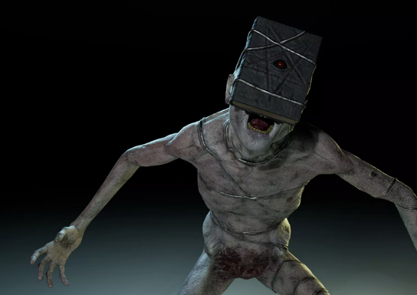
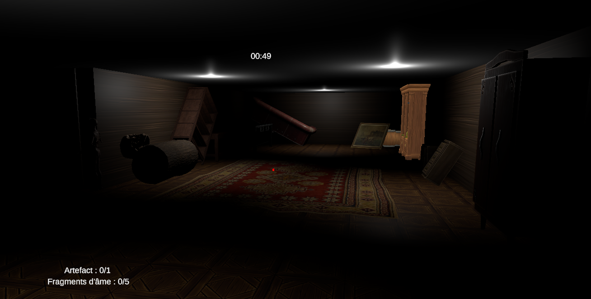

Ressources
Printemps 2025 – Dernières nouveautés

Apparition du Spectre
Les premières images du spectre qui hante le jeu ont été révélées. Son design dérangeant et sa posture menaçante annoncent l'ambiance pesante du gameplay.

Premières images de jeu
La première capture d’écran donne un aperçu de la maison. Lumières tamisées, pièces désordonnées : chaque recoin semble cacher une menace...

Le maillot officiel LRMH
Un maillot de foot collector a été dévoilé en parallèle de la sortie du jeu. Aux couleurs de LRMH, il célèbre le lancement du projet dans un style sombre et stylisé.